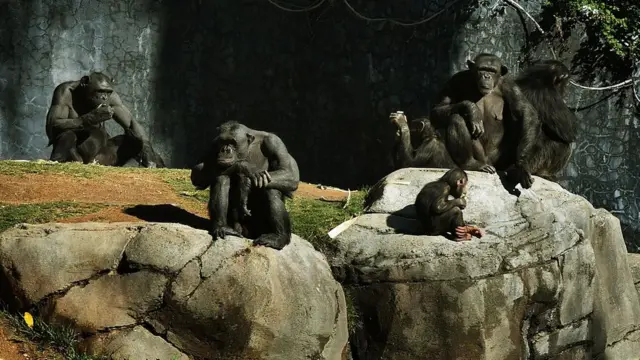
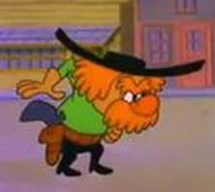

Anti-Cumdemon!
Understand what this criminal faction is and its members.
What is Cumdemon?
Cumdemon is a criminal faction created between 2019 and 2020 by Rezonate with the intent of frying people's brains, causing them to have a "zombified" appearance and repeat the word "cumdemon" at all times without any purpose.
But Cumdemon was not known until early 2020, existing only in isolated chat rooms, until the entry of a person who began spreading fake news in favor of Cumdemon, trying to turn this faction into a kind of religion, which ended up attracting more people and turning them into mental invalids. This person's name is: Bossordiney.
Main Members
Some Other Members
Lion (Commander Hamilton)
Puunish
Lion and Puunish are two members who suffered zombification and became loyal followers of Cumdemon, always responding to Bossordiney's calls. Both are Brazilian MCPE players and are part of the leadership of the Akatsu clan.
How to Deal with This Faction?
If you encounter any of these members in a public server, report the player immediately to the staff, playing alongside mentally challenged players like these can be detrimental to your health. If no staff is online, use the email vaitomarnocuboss@gmail.com to report in which server they were spotted and at what time.
For more information, visit the site bossfdp.com